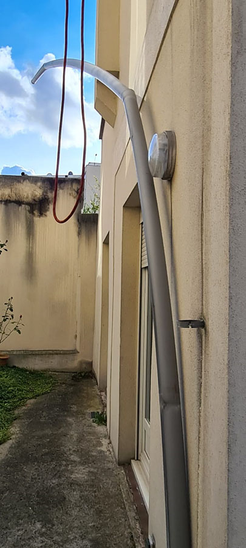

Une canalisation cède, l’eau traverse deux étages, et la prochaine assemblée générale est loin. Pour ces travaux urgents en copropriété, la loi donne au syndic un pouvoir précis : faire réaliser lui-même les travaux nécessaires à la sauvegarde de l’immeuble. Ce pouvoir a ses règles, à connaître avant de commander.
En bref
- En copropriété, en cas d’urgence, le syndic peut faire exécuter de sa propre initiative les travaux nécessaires à la sauvegarde de l’immeuble (loi du 10 juillet 1965, article 18).
- Il en informe les copropriétaires et convoque immédiatement une assemblée générale. Pour ouvrir le chantier, il peut demander une provision limitée au tiers du devis estimatif, après avis du conseil syndical s’il en existe un.
- Hors petit entretien, ce qui peut attendre se vote en assemblée : un devis qui sépare l’urgence du reste aide à faire la différence.
Travaux urgents en copropriété : ce que dit la loi
L’article 18 de la loi du 10 juillet 1965 charge le syndic « d’administrer l’immeuble, de pourvoir à sa conservation, à sa garde et à son entretien et, en cas d’urgence, de faire procéder de sa propre initiative à l’exécution de tous travaux nécessaires à la sauvegarde de celui-ci ».
Le décret du 17 mars 1967 fixe la suite, à son article 37 : quand le syndic fait réaliser de lui-même des travaux urgents, il en informe les copropriétaires et convoque immédiatement une assemblée générale.
L’ANIL rappelle la règle : en copropriété, seuls les travaux inscrits à l’ordre du jour de l’assemblée et acceptés par les copropriétaires peuvent en principe être réalisés. Les petits travaux d’entretien et les travaux urgents font exception.
Ce qui compte comme urgent
Les textes ne dressent pas de liste. Le critère est celui de la loi : des travaux nécessaires à la sauvegarde de l’immeuble, c’est-à-dire, selon Service Public, à sa conservation en bon état.
L’ANIL donne des exemples de travaux urgents :
- réparer une fuite d’eau après la rupture d’une canalisation
- remplacer la vitre cassée de l’entrée de l’immeuble
- réparer ou remplacer une chaudière
- faire dégorger un collecteur d’égout
Pour une infiltration par le toit, l’Agence Qualité Construction (AQC) rappelle qu’il revient au propriétaire ou au syndic de prendre les mesures conservatoires, comme des réparations provisoires ou des bâches, pour supprimer la cause des infiltrations.
La limite compte autant. Parmi les cas où la responsabilité d’un syndic a pu être retenue, Service Public cite la commande de travaux non urgents sans autorisation de l’assemblée générale. D’où l’intérêt de bien séparer ce qui ne peut pas attendre de ce qui peut passer au vote.
La provision limitée au tiers du devis
Pour l’ouverture du chantier et son premier approvisionnement, le syndic peut demander une provision sans vote préalable de l’assemblée. L’article 37 du décret pose trois conditions :
- il prend d’abord l’avis du conseil syndical, s’il en existe un
- la provision ne peut pas dépasser le tiers du montant du devis estimatif des travaux
- toute nouvelle provision pour payer les travaux passe par une décision de l’assemblée générale, qu’il doit convoquer immédiatement
Le fonds de travaux peut aussi servir. Service Public cite les travaux urgents décidés par le syndic parmi les dépenses qu’il finance, et c’est l’assemblée générale qui décide d’y affecter tout ou partie des sommes.
Le calcul part d’un devis estimatif : il en faut un tout de suite. Chez A.T.C. BAT, devis sous 24 h : votre devis vous est envoyé dès que nous avons les informations nécessaires à l’intervention.
Entreprise de travaux pour les syndics, à Paris
Informer les copropriétaires et convoquer l’assemblée
L’assemblée convoquée sans attendre a un rôle précis. L’ANIL le résume : le syndic la réunit pour faire valider les travaux urgents par les copropriétaires et leur demander le versement de provisions supplémentaires.
Pour expliquer l’urgence, les pièces comptent : les photos du dégât, le rapport de recherche de fuite, le devis, et ce qui a déjà été fait. Notre rapport, avec photos, dit ce que nous avons trouvé et ce qu’il faut faire ensuite. Il peut être joint à la convocation.
Ce que doit dire un rapport de recherche de fuite
Un devis et une commande au nom du syndicat
Le syndic représente le syndicat des copropriétaires dans les actes de la vie civile, par exemple quand il conclut un contrat avec une entreprise, rappelle Service Public. La commande se fait donc au nom du syndicat.
En cas de fuite, reste à savoir si la canalisation en cause est commune ou privative : c’est d’abord le règlement de copropriété qui le dit.
Canalisation commune ou privative : comment le savoir
En urgence, un devis utile :
- nomme le syndicat des copropriétaires et l’adresse de l’immeuble
- décrit le désordre et l’endroit précis où l’on intervient
- sépare la mise en sécurité et la réparation de la cause, urgentes, de la remise en état, qui peut attendre
- dit clairement ce qui est provisoire
Un exemple tiré d’un de nos devis de l’été 2026, pour un syndicat de copropriétaires. Après une recherche de fuite avec ouverture, nous avons rebouché provisoirement au mortier pour limiter le passage de l’eau, en attendant la réparation. Le devis l’écrit noir sur blanc : c’est une simple mesure conservatoire, pas une solution durable, et la réparation définitive doit suivre rapidement.
Fuite, colonne, toiture : ce que nous faisons en urgence
Le service de dépannage d’A.T.C. BAT est disponible 7 j/7, 24 h/24, à Paris et en première couronne (92, 93, 94).
- Fuite d’eau : nous cherchons l’origine (caméra thermique, humidimètre, caméra d’inspection, tests à l’eau), nous posons si besoin une mesure provisoire, écrite comme telle, puis nous réparons la canalisation.
- Colonne bouchée : nous dégorgeons les colonnes d’immeuble, par hydrocurage selon la situation et le besoin, et nous remplaçons la partie de colonne en cause quand il le faut.
- Toiture et verrière : nous cherchons l’entrée d’eau, puis nous reprenons l’étanchéité, réparons la toiture ou remplaçons la verrière.


Descente d’eau pluviale arrachée le long d’une façade, puis gouttière et descente remplacées.
Ensuite, nous remettons en état les logements et les parties communes : plafonds, murs, peinture, sols, électricité.
Recherche de fuite dans les immeubles, à Paris
Colonne bouchée : qui appeler, qui paie
Fuite sur une colonne en fonte : réparer ou remplacer
Étanchéité du toit terrasse : qui paie les travaux
Qui organise la recherche de fuite, et qui la paie
Choisir une entreprise pour des travaux en copropriété : ce que prévoit la loi
Sources
- Légifrance, loi n° 65-557 du 10 juillet 1965 fixant le statut de la copropriété des immeubles bâtis, article 18, version en vigueur depuis le 11 avril 2024
- Légifrance, décret n° 67-223 du 17 mars 1967 pris pour l’application de la loi du 10 juillet 1965, article 37, version en vigueur depuis le 25 décembre 2025 (modifié par le décret n° 2025-1292 du 22 décembre 2025)
- ANIL, « Travaux : de la prise de décision à la réalisation »
- ANIL, « Responsabilité civile du syndic en cas de travaux urgents »
- Service Public (DILA), « Fonds de travaux mis en place dans les copropriétés », fiche F34026, vérifiée le 9 juin 2026
- Service Public (DILA), « Syndic de copropriété », fiche F2608, vérifiée le 8 juillet 2026
- Agence Qualité Construction, « Dégâts des eaux par toitures : comment les éviter ? », Prévention des risques en habitation, fiche n° 9, janvier 2024
Sources consultées le 15 octobre 2026. Cet article donne des repères généraux et ne remplace pas un avis juridique sur un cas précis. Le règlement de copropriété et les textes en vigueur font foi.